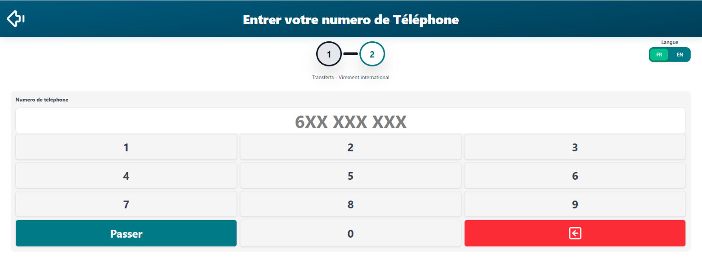
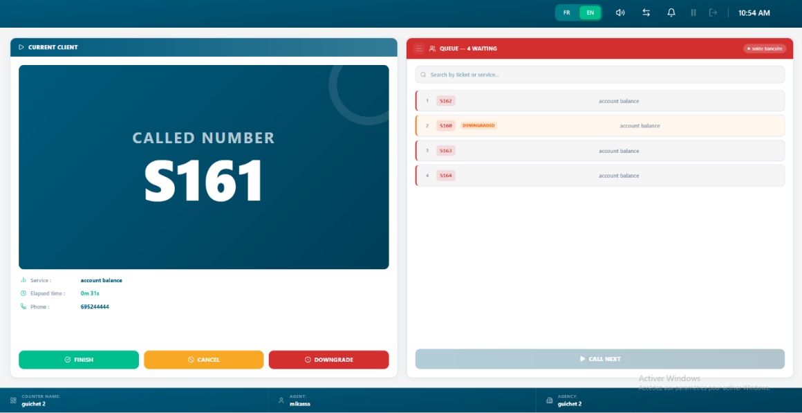
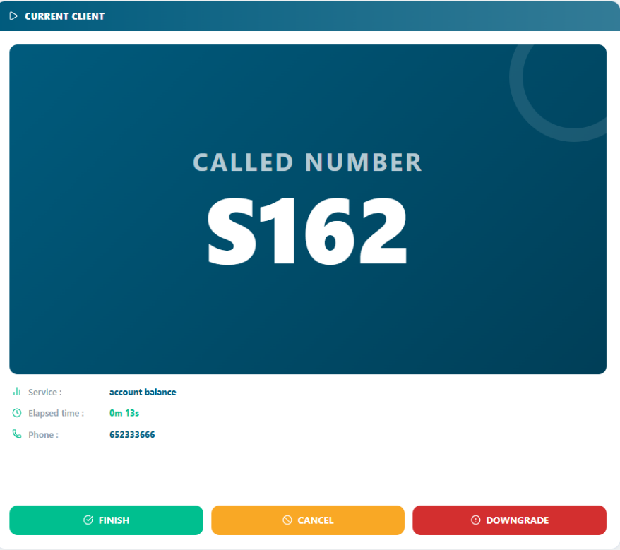
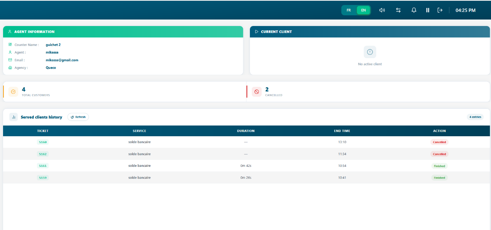

Ticket Management¶
The core daily workflow how to create, call, process, hold, transfer, and close service tickets from start to finish.
In this chapter
|
After this chapter you will be able to
|
|---|
6.1 The Ticket Lifecycle¶
Every customer service request in Queco follows a defined lifecycle. Understanding each stage helps handle tickets correctly and helps managers identify where delays or issue occur in the queue.
| # | Status | Description |
|---|---|---|
| 1 | Create | A new ticket has been issued. It has a unique number and is waiting in the agency queue. |
| 2 | Queued | The ticket is in line and waiting to be called by an available agent at the relevant counter. |
| 3 | Called | An agent has called the ticket number. The customer is being summoned to the counter. |
| 4 | In Progress | The agent is actively processing the customer's request at the counter. |
| 5 | Cancelled | The ticket was voided before processing (e.g., customer left, duplicate entry). |
| 6 | declassed | The ticket is added back at the end of the queue list |
| NOTE | A ticket can move between, Waiting, Called, in progress and Terminate or Cancelled. Every status change is logged in the ticket's activity history for full auditability. |
|---|---|
6.2 Creating a Ticket (Ticket Kiosk)¶
Tickets represent individual customer service request. They can be created by Super Admin, Managers and agents. In most deployment, agent at the reception desk create tickets on behalf of the customer as they arrive.
6.2.1 Step- Step: Creating a New Ticket on kiosk¶
Step 1: When the client comes to a particular agency, they will meet the agent at desk
that will help the create the ticket on the kiosk
Super Admins see all agencies. Managers and Agents see only their assigned agency.
Step 2: Select the service the customer needs.
Only services activated for this agency are shown. See Chapter 5 - Section 5.5 if a service is missing.
Step 3: Select the operation, the specific task within the service
Example: Under 'Account Management', select 'Open Account'.
Step 4: Enter the customer mobile number
The customer phone number is obligated
Step 5: After the customer has entered their number, click Passer
A unique ticket number is generated (e.g., ACC-0042) and the ticket joins the queue immediately.
 Figure 6.2 — New Ticket creation form with all fields |
|---|
| NOTE | If no services appear in the Service dropdown, the agency has no activated services. A Manager or Super Admin must activate services for this agency first (Chapter 5 — Section 5.5). |
|---|---|
6.3 Calling the Next Ticket¶
Once your counter is open you can begin calling ticket from the Queue. The system automatically serves tickets. The oldest ticket is served first (FIFO).
6.3.1 step by step: Call Next Ticket¶
Step 1: Ensure your counter is Open
If your counter shows Closed or display a non-assigned message signal the admin or super admin.
Step 2: When a customer creates a new ticket on the kiosk, the tick is automatically assigning to the queue list of that service in that agency.
The ticket number is automatically displayed in the waiting list of a counter how perform that service
Step 3: While in the queue list the ticket status is IN_WAITING and when called to active session it changes to CALLED then after IN_PROGRESS and counter time start immediately
The customer is expected to approach your counter when called
 Figure 6.3 Agent Dashboard showing active ticket actions button and queue list with waiting ticket and Call Next button |
|---|
| TIP | If a customer does not arrive after being called, you can downgrade and the ticket number is displayed back into the queue list with an orange color highlighted on it. |
|---|---|
6.3.2 Downgrade a Ticket¶
If a ticket is being called and the agent has waited for at list one minute and the customer hasn’t approached the agent concern, the ticket is downgraded back into the end of the waiting list to be called again the second time.
Step 1: On the active ticket view, click the “Downgrade” button
The ticket is moved back into the queue list. The system is to re-queue the ticket (giving the customer one more chance) or cancel it automatically. A ticket is only Downgrade once after when called back, the downgraded button becomes inactive leaving “terminate” or “cancelled”
6.4 Processing a Ticket¶
Once the ticket is in progress, the agent handles the customer request. This may involve using other internal systems or preforming different operations within Queco. The ticket remain in progress until is Terminated, Cancelled or Downgrade.
6.4.1 The Active Ticket View¶
When a ticket is in progress, the agent sees the active ticket panel on their dashboard. This panel contains all the information needed to process the request.
| Panel Element | What It Shows |
|---|---|
| Ticket Number | The called number displayed prominently (e.g., S162) |
| Service & Operation | The type of service requested by the customer (e.g., account balance) |
| Elapsed Time | Live timer showing how long the ticket has been in progress (e.g., 0m 13s) |
| Action Buttons | Finish, Cancel, Downgrade — the three key actions available during processing |
| Phone | The customer's phone number (e.g., 652333666) |
 Figure 6.4 — Active Ticket panel with all elements labelled |
|---|
6.5 Closing a Ticket¶
Close a ticket once the customer's request has been fully addressed. Closing is the final step in the ticket lifecycle. It records the resolution, stops the processing timer, and makes the ticket available in the historical archive for reporting and audit purposes.
6.5.1 Step-by-Step: Close a ticket¶
We can close a ticket by performing from the active view by performing 3 actions
- Terminate a ticket
Step 1: On the active Ticket Panel, Click Finish Button
Step The terminate instantly and with the timer and recorded in the history section
- Downgrade a Ticket
Step 1: Click the downgrade button and the ticket will go at back at the end of the waiting list with an orange color to differentiate
- Cancel a Ticket
Step 1: On the yellow button click cancel
Step 2: The cancel dialog appears on the screen
Step 3: Click Confirm to actually cancel the ticket and it will also record in the history section
A cancelled ticket was never fully processed. It is voided before or during the process.
| Scenario | Correct Action |
|---|---|
| Customer left before being called | Use the cancel button in the counter |
| Customer changed their mind mid-process | Cancel the In Progress ticket |
| Wrong service selected at creation | Cancel the ticket and create a new one with the correct service. |
| WARNING | Cancellation is permanent and cannot be undone. Cancelled tickets are included from most analytics reports. Use Cancel only when appropriate do not use it to avoid recording an Unresolved outcome. |
|---|---|
6.6 Ticket History¶
All Finished and cancelled tickets are archived in the Ticket History. Managers and Super Admins have full access. Agents can search tickets from their own counter's history for the day. After a day and after, the ticket history is cleared off for a new day.
6.6.1 Accessing Ticket History¶
Step 1: In the counter on the top bar click the arrow and it will flip to the next interface where the history is located
 Figure 6.8 — Ticket History page with search bar and filter panel |
|---|
6.7 Chapter Summary¶
This chapter covered the complete ticket management workflow from creation through every processing stage to final closure and historical review. By now you should be able to:
-
Describe every stage of the ticket lifecycle and what each status means.
-
Create a ticket with correct service, operation, and priority settings.
-
Call the next ticket from the queue and begin processing it.
-
Close a ticket with the correct resolution status.
-
Search and filter ticket history.
Chapter 7